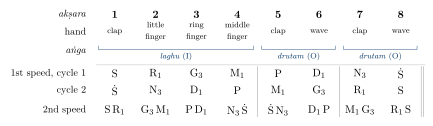
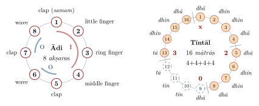
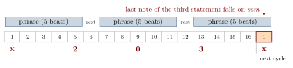

Chapter 5: Tāla: Rhythm and Metre¶
If rāga organises pitch, tāla organises time. A tāla is a cycle of a fixed number of time units, divided into sections and marked by a pattern of claps, waves and finger-counts or by the strokes of a drum; it repeats throughout a composition or improvisation, and every phrase is measured against it. The first beat of the cycle (sam in Hindustani music, samam in Karnatak) is the point of arrival towards which rhythmic and melodic phrases are directed and on which performers and listeners meet. Indian rhythm is cyclical in this practical sense: a performance is a succession of cycles, often hundreds of them, within which the musicians create tension and release. The ancient theory, the two modern systems, tempo and rhythmic transformation (layakārī), the spoken languages of the drums and the cadences built on them are taken here in that order; the drums themselves are described in Chapter 10, and rhythm in dance in Chapter 13.
5.1 Basic Terms¶
- Tāla.
- The rhythmic cycle; also, in older usage, the hand gestures that keep time. A traditional etymology, found in medieval texts, derives tā from Śiva’s tāṇḍava and la from Pārvatī’s lāsya; it is a pious word-play, not a historical derivation.
- Mātrā (Hindustani), akṣara (Karnatak).
- The unit of time, the “beat” of the cycle.
- Āvartan (Hindustani), āvartana or āvarta (Karnatak).
- One complete cycle.
- Vibhāg (Hindustani), aṅga (Karnatak).
- A section of the cycle.
- Tālī and khālī.
- In Hindustani music the sections are marked by a clap (tālī) or, for the “empty” section, by a wave of the hand (khālī); on the drum the khālī section is usually played without the resonant bass strokes, so that a listener can tell where in the cycle the music is.
- Sam.
- The first beat of the cycle and the strongest point of arrival.
- Laya.
- Tempo; more broadly, the sense of a steady flow of time. Karnatak musicians also speak of kāla, the “speed” or level of subdivision.
- Ṭhekā.
- In Hindustani music, the standard pattern of drum syllables (bol) that identifies a tāla and is played as the accompaniment’s base.
5.2 Tāla in the Ancient Texts¶
The Nāṭyaśāstra (ch. 31 in Ghosh’s numbering) and the Dattilam describe a system of time-measure for the ritual and theatre music of their age. Time was measured in units of short (laghu), long (guru) and extra-long (pluta) duration, borrowed from the prosody of syllables, and organised into a small number of “path” (mārga) tālas, among them cañcatpuṭa, cācapuṭa, ṣaṭpitāputraka and udghaṭṭa. The units were made audible and visible by gestures (kriyā): sounded ones such as the clap with the right hand (śamyā), with the left (tāla) or with both (sannipāta), and silent ones (niḥśabda) such as counting on the fingers or moving the hand outwards and inwards. These tālas could be performed at different speeds and in more or less elaborate forms (Rowell 1992; Lath 1978; Nijenhuis 1970).
As with melody, the ancient mārga system was preserved in the texts long after it ceased to be practised. The Saṅgītaratnākara (thirteenth century) describes the mārga tālas and also lists 120 “regional” (deśī) tālas, many of them the ancestors of later southern tālas. Its chapter on tāla applies to rhythmic patterns the combinatorial procedures that Indian prosodists had developed for metres: the systematic listing of all possible patterns of a given length (prastāra), the calculation of their number (saṅkhyā), and the finding of a pattern from its position in the list (naṣṭa) and of its position from the pattern (uddiṣṭa) (Shringy and Sharma 1978). The method goes back to the prosodist Piṅgala’s Chandaḥsūtra, composed in the last centuries BCE, and the triangular array of numbers used to count combinations of long and short syllables — the array known in Europe as “Pascal’s triangle” — is explicitly described in Halāyudha’s tenth-century commentary on Piṅgala. These are genuine achievements of Indian combinatorics, discussed further in Volume 11, Gaṇita; they are historical, not evidence that musicians performed mathematics in the modern sense.
Later writers summarised the theory of tāla under ten “vital elements” (daśa prāṇa): time (kāla); the “path” (mārga), the scale of duration; the actions that mark the units (kriyā); the sections of the cycle (aṅga); the starting point (graha); the class of a tāla by its basic number (jāti); its subdivisions (kalā); tempo (laya); the pattern of change of tempo or of phrase length (yati); and the systematic permutation of patterns (prastāra). The scheme is still taught in Karnatak music and dance, and several of its terms — graha, jāti, yati — have kept their technical meanings in modern practice (below and Chapter 13). Medieval and early modern texts also list large numbers of deśī tālas, and lists of 108 tālas, each with its sequence of aṅgas, were preserved by the dance masters of the south, who used some of them in composing rhythmic passages for dance.
5.3 The Karnatak System¶
5.3.1 The sūḷādi sapta tālas¶
Modern Karnatak music organises its principal tālas in a scheme of seven “sūḷādi” tālas, so called after a genre of composition attributed to Purandaradāsa (1484–1564) and the Haridāsa composers. Each tāla is a fixed sequence of three kinds of section (aṅga):
- Laghu
- (symbol I): a clap followed by finger-counts; its length is variable.
- Drutam
- (symbol O): a clap and a wave, two beats.
- Anudrutam
- (symbol U): a single clap, one beat.
The length of the laghu is fixed by the “class” (jāti) of the tāla: three beats in tiśra, four in catuśra, five in khaṇḍa, seven in miśra and nine in saṅkīrṇa. Each of the seven tālas can therefore take five forms, giving thirty-five tālas in all (Table 5.1). Each beat can in turn be subdivided in five ways (gati or naḍai, below), so that theorists speak of 175 tālas (Viswanathan and Allen 2004).
| Tāla | Aṅgas | Tiśra (3) | Catuśra (4) | Khaṇḍa (5) | Miśra (7) | Saṅkīrṇa (9) |
|---|---|---|---|---|---|---|
| Dhruva | I O I I | 11 | 14 | 17 | 23 | 29 |
| Maṭhya | I O I | 8 | 10 | 12 | 16 | 20 |
| Rūpaka | O I | 5 | 6 | 7 | 9 | 11 |
| Jhampa | I U O | 6 | 7 | 8 | 10 | 12 |
| Triputa | I O O | 7 | 8 | 9 | 11 | 13 |
| Aṭa | I I O O | 10 | 12 | 14 | 18 | 22 |
| Eka | I | 3 | 4 | 5 | 7 | 9 |
5.3.2 Tālas in practice¶
Only a few of these tālas are in common use. By far the most frequent is Ādi tāla (“first” tāla), which is catuśra-jāti Triputa: a laghu of four beats (a clap and three finger-counts) followed by two drutams (clap–wave, clap–wave), eight beats in all (Figures 5.2 and 5.1). Ādi tāla is used in two speeds, with one or two beats of the hand to each akṣara (the latter, “two-kaḷai” form, for slow varṇams and long kṛtis). Rūpaka (in practice often counted as three beats of double length), Miśra Jhampa, Khaṇḍa Aṭa and Tiśra Triputa are also used. Two tālas outside the sūḷādi scheme are very common in songs and dance music: Miśra Cāpu, of seven beats grouped 3+2+2, and Khaṇḍa Cāpu, of five beats grouped 2+3; their name, “cāpu”, is thought to reflect their origin in folk and devotional song.
The first exercise every Karnatak student learns shows how a melody is laid against the hand-count. The sarali varisai in Rāga Māyāmāḷavagauḷa (Chapter 4) runs up the scale and down again, one note to each beat of Ādi tāla, and is then repeated at twice and four times the density; Figure 5.1 notates the first of these exercises in its first two speeds.

5.3.3 Gati and naḍai¶
Within any tāla each beat can be subdivided into three, four, five, seven or nine units, the five gatis (or naḍais, “gaits”), each recited with its own syllables (Table 5.2). A performer may change the gati while the tāla remains the same, moving for example from four to five subdivisions per beat; such changes are a basic resource of Karnatak improvisation and of the drum solo.
| Gati | Units per beat | Syllables |
|---|---|---|
| Tiśra | 3 | ta ki ṭa |
| Catuśra | 4 | ta ka dhi mi |
| Khaṇḍa | 5 | ta ka ta ki ṭa |
| Miśra | 7 | ta ki ṭa ta ka dhi mi |
| Saṅkīrṇa | 9 | ta ka dhi mi ta ka ta ki ṭa |
5.3.4 The starting point (eḍuppu)¶
A Karnatak composition need not begin on the first beat of the cycle. Its starting point (eḍuppu, also called graha) may be on the beat (sama), before it (atīta) or after it (anāgata); in Ādi tāla many kṛtis begin half a beat or a beat and a half after the samam. The eḍuppu is the point to which improvised phrases (kalpana svara, niraval) must return, and its placement gives each composition a distinctive rhythmic profile.
5.4 The Hindustani System¶
5.4.1 Tāla and ṭhekā¶
Hindustani tālas are described by their number of mātrās, their division into vibhāgs, the pattern of tālī and khālī, and above all by their ṭhekā, the characteristic sequence of drum syllables played on the tablā or pakhāvaj. In notation, the sam is marked “x”, the khālī “0” and the other claps by numbers. Table 5.3 gives the commonest tālas (Clayton 2000; Kippen 1988), and Figure 5.2 sets the sixteen-beat Tīntāl beside the Karnatak Ādi tāla: both are cycles that return to their first beat, but one is counted on the hands and the other is recognised by the sound of the drum.

| Tāla | Beats | Vibhāgs | Claps | Ṭhekā |
|---|---|---|---|---|
| Tīntāl | 16 | 4+4+4+4 | x 2 0 3 | dhā dhin dhin dhā \(|\) dhā dhin dhin dhā \(|\) dhā tin tin tā \(|\) tā dhin dhin dhā |
| Ektāl | 12 | 6 \(\times\) 2 | x 0 2 0 3 4 | dhin dhin \(|\) dhāge tirakiṭa \(|\) tū nā \(|\) kat tā \(|\) dhāge tirakiṭa \(|\) dhī nā |
| Jhaptāl | 10 | 2+3+2+3 | x 2 0 3 | dhī nā \(|\) dhī dhī nā \(|\) tī nā \(|\) dhī dhī nā |
| Rūpak | 7 | 3+2+2 | 0 1 2 | tī tī nā \(|\) dhī nā \(|\) dhī nā |
| Dādrā | 6 | 3+3 | x 0 | dhā dhī nā \(|\) dhā tī nā |
| Kaharvā | 8 | 4+4 | x 0 | dhā ge na ti \(|\) na ka dhi na |
| Cautāl | 12 | 6 \(\times\) 2 | x 0 2 0 3 4 | dhā dhā \(|\) din tā \(|\) kiṭa dhā \(|\) din tā \(|\) tiṭa kata \(|\) gadi gana |
| Dhamār | 14 | 5+2+3+4 | x 2 0 3 | ka dhi ṭa dhi ṭa \(|\) dhā – \(|\) ga ti ṭa \(|\) ti ṭa tā – |
Tīntāl, of sixteen beats, is the most widely used tāla in Hindustani music, for vocal and instrumental compositions at all tempos and for Kathak dance. Ektāl, the fourteen-beat Jhūmrā and the sixteen-beat Tilvāḍā serve the slow (vilambit) khayāl; Jhaptāl and Rūpak are used for medium-tempo compositions; Dādrā and Kaharvā, with their lilting groupings, for ṭhumrī, ghazal, bhajan and much light and folk music; Dīpcandī (fourteen beats) for ṭhumrī. Rūpak is unusual in beginning with a khālī: its first beat is “empty”. Cautāl and Dhamār, played on the pakhāvaj, are the tālas of dhrupad and dhamār (Chapter 7).
5.4.2 Metre and ṭhekā¶
Martin Clayton has shown that a Hindustani tāla is best understood as a metre in the full sense, a hierarchy of beats and sections against which the listener hears the music, while the ṭhekā is a particular realisation of it on the drum. The same tāla can be realised differently at different tempos, and at very slow tempos, as in vilambit khayāl, where a cycle of Ektāl may last a minute or more, the individual mātrās are filled with subsidiary strokes and the singer’s sense of time depends on the drummer’s articulation of the ṭhekā (Clayton 2000).
5.5 Laya and Layakārī¶
Three basic tempos are recognised: slow (vilambit), medium (madhya) and fast (drut), with very slow (ati-vilambit) and very fast (ati-drut) extremes. In Hindustani music the tempo of a performance typically increases gradually from beginning to end. Karnatak music usually keeps a steadier basic tempo but moves between levels of subdivision, the first, second and third “speeds” (kāla).
Layakārī, “rhythm-making”, is the art of playing with the relation between the surface rhythm and the underlying pulse. Its simplest forms are the multiplication of the density of notes or syllables per beat — double (dugun), triple (tigun), fourfold (caugun) — relative to the base (ṭhāh); more complex forms use ratios such as 3:2 (āḍ), 5:4 (kuāḍ) and 7:4 (biāḍ), which produce cross-rhythms against the pulse (Table 5.4). In dhrupad and dhamār, the singer recites the text of the composition in successive layakārīs while the pakhāvaj player keeps or answers the cycle; in khayāl and instrumental music the same principle governs the rhythmic play of tāns and bol-tāns (Sanyal and Widdess 2004; Clayton 2000).
| Name | Ratio | Effect |
|---|---|---|
| ṭhāh | 1:1 | one unit per beat |
| dugun | 2:1 | double density |
| tigun | 3:1 | triple density |
| caugun | 4:1 | fourfold density |
| āḍ | 3:2 | three units in the time of two; a “limping” cross-rhythm |
| kuāḍ | 5:4 | five units in the time of four |
| biāḍ | 7:4 | seven units in the time of four |
5.6 The Languages of the Drums¶
Indian drummers learn and transmit their art through spoken syllables, each of which stands for a stroke or a combination of strokes. On the tablā, nā or tā is a ringing stroke on the rim of the right-hand drum, tin a stroke on its inner area, ge or ghe a resonant stroke on the left-hand drum, ke or ka a closed, damped stroke on it, and dhā and dhin combine a right-hand stroke with the resonant left-hand ge; compound syllables such as tirakiṭa and dhāge represent rapid groups of strokes (Kippen 1988). The pakhāvaj has its own, heavier syllables (dhumakiṭa, gadi gana). On the mṛdaṅgam the basic syllables (sollu) include ta or tha, dhi, thom, nam, ki and ṭa, and the strokes combine the right-hand head with the open or closed bass of the left. Because the syllables can be recited, a composition can be taught, memorised and performed vocally; the recitation itself is an art (paḍhant in the north, konnakkol in the south).
The syllables are not an arbitrary code. Dancers use related syllables for footwork (Chapter 13), singers and instrumentalists imitate drum phrases, and the compositions of the drum repertoire — recited by the drummer before he plays them, or by a dancer’s teacher (naṭṭuvaṉār) as the dancer performs — are among the most refined forms of Indian rhythmic art.
5.6.1 Tablā compositions and gharānās¶
The tablā repertoire, transmitted in hereditary lineages (gharānās) associated with Delhi, Ajrāḍā, Lucknow, Farrukhābād, Banāras and the Punjab, distinguishes fixed compositions such as qāida (a theme with systematic variations ending in a cadence), relā (a rapid, rolling composition), gat, ṭukṛā, paran (originally a pakhāvaj form) and chakkardār compositions (a cadence repeated three times so that the final stroke of the third falls on sam). James Kippen’s study of the Lucknow tradition shows how the repertoire was tied to the social history of the hereditary families who taught it (Kippen 1988).
5.6.2 The Karnatak percussion solo¶
In a Karnatak concert the percussionists — mṛdaṅgam, often with ghaṭam, kañjīrā or morsing — play a solo (tani āvartanam) after the main composition, exploring the tāla through changes of gati, alternating exchanges in which the phrases are progressively shortened (koraippu), and composed cadences (mōrā and korvai), before handing back to the melodist with a final cadence that lands on the eḍuppu of the composition (Viswanathan and Allen 2004).
5.7 Cadences¶
5.7.1 Tihāī¶
The most characteristic cadential device of Hindustani music is the tihāī (“threefold”): a phrase played or sung three times so that the last note or stroke of the third statement falls on the sam. The arithmetic is simple but must be exact. If a phrase of \(n\) beats is separated from the next by a rest of \(g\) beats, the tihāī lasts \(3n + 2g\) beats, counting the final arrival; in a sixteen-beat cycle, a phrase of five beats with a rest of one beat (5 + 1 + 5 + 1 + 5 = 17) begun on the sam ends on the sam of the following cycle (Figure 5.3).

Composers build elaborate tihāīs in which each of the three statements is itself a smaller tihāī, or in which the three statements are spread across several cycles. The pleasure of the device lies in its predictability: the listener knows that an arrival is coming and waits for it.
5.7.2 Mōrā and korvai¶
The Karnatak equivalents are the mōrā, a short phrase repeated three times to reach the samam or eḍuppu, and the korvai, a longer composed cadence that may combine several phrases in decreasing or increasing lengths, each section repeated three times, and that is often calculated to fit different speeds or gatis. Korvais are used both by percussionists and by dancers, for whom they form the climactic sequences (tīrmāṉam) that close passages of pure dance (Chapter 13).
5.7.3 Cross-rhythm and displacement¶
Both traditions exploit the tension between groupings of beats and the cycle. A drummer may group the sixteen beats of Tīntāl as 5+5+6 or play phrases of seven against a pulse of four; a singer may begin a phrase off the beat so that its stresses fall against the claps. The skill lies in creating maximal tension while never losing the cycle, so that the return to sam is felt as a resolution.
5.8 Rhythmic Dialogue¶
Rhythm in Indian music is a matter of interaction between performers. In Hindustani concerts the soloist and the tablā player engage in passages of question and answer (savāl-javāb), the drummer reproducing or answering the soloist’s rhythmic phrases, in progressively shorter exchanges, until both arrive together on the sam. In Kathak, the dancer and the drummer engage in similar exchanges, the dancer’s feet answering the drum. In Karnatak music the percussionists respond continuously to the melodic and textual rhythms of the singer, and in the tani āvartanam to each other. The audience participates too: listeners in both traditions keep the tāla with their hands, and the shared arrival on sam is often greeted with audible approval.
5.9 Konnakkol and Vocal Rhythm¶
Konnakkol, the recitation of rhythmic syllables as a performance art, has developed in the Karnatak tradition from the teaching practice of drummers and dance teachers. Its practitioners recite complex compositions in changing gatis at high speed, keeping the tāla with the hands. In the late twentieth century the ghaṭam player T. H. Vinayakram, a member of the guitarist John McLaughlin’s group Shakti from the mid-1970s, and later his son V. Selvaganesh brought konnakkol to international audiences through such collaborations with jazz and fusion musicians, and it has since been taken up by percussionists and teachers of rhythm in many countries (Lavezzoli 2006).
5.10 Tāla and the Forms of Composition¶
Each genre of Indian music has its favoured tālas and its own way of relating melody to the cycle. In dhrupad and dhamār (Chapter 7) the climax of a performance is often rhythmic rather than melodic, as the singer recites the words of the composition in successive layakārīs against the pakhāvaj (Sanyal and Widdess 2004). In khayāl, by contrast, the slow cycle of the “great” (baṛā) khayāl is a frame within which the singer develops the rāga at leisure, returning periodically to the first line of the composition (the mukhṛā) to arrive on sam; the fast choṭā khayāl and the tarānā give more scope for rhythmic play. In the sitār and sarod gats, normally in Tīntāl, the stroke patterns of the right hand (bol) interact with the drum strokes much as the words of a song do (Clayton 2000; Miner 1993).
In Karnatak music most kṛtis are in Ādi, Rūpaka, Miśra Cāpu or Khaṇḍa Cāpu tāla. The varṇam, a composition used both as a study piece and as a concert opener, is often in Ādi tāla of two kaḷai or in Aṭa tāla. The most demanding rhythmic genre is the pallavi of the suite called rāgam–tānam–pallavi: a single line of text set to a melody that may be composed in a complex or unusual tāla, with a structural pause (arudi) that divides it, and then developed by the singer through melodic variation (niraval), performance at different speeds (trikālam), changes of gati and passages of improvised svaras. A singer’s command of layam is judged above all in the pallavi (Viswanathan and Allen 2004).
Devotional and light genres generally use simpler metres. Bhajan, ghazal and ṭhumrī are sung in Kaharvā, Dādrā, Dīpcandī or Rūpak; in qawwālī the chorus claps the beat while the ḍholak and tablā drive a gradually accelerating rhythm towards the moments of ecstasy that the genre seeks (Chapter 7) (Qureshi 1986). Sikh kīrtan uses both art-music tālas and the simpler metres of devotional song, played on the jōṛī, a pair of drums related to the tablā.
5.11 Tāla in Dance and Theatre¶
In dance the relation between rhythm and movement is direct: the dancer’s feet are themselves a percussion instrument. The rhythmic units of the southern forms — the jatis danced to the naṭṭuvaṉār’s recited syllables and closed by triple cadences (tīrmāṉam) analogous to the drummer’s mōrā and korvai — and the Kathak dancer’s ṭukṛās, parans and tihāīs, danced mostly in Tīntāl against a repeated melodic phrase (lahrā), are described with the grammar of pure dance in Chapter 13 and with the individual forms in Chapters 15 and 16. The theatres of Kerala have their own drums and rhythmic systems, from the miḻāvu of Kūṭiyāṭṭam to the ceṇṭa, maddaḷam and iḍakka of Kathakaḷi, to which the actors’ movements and the cadences of their gesture-language are timed; the temple drum ensembles of Kerala, such as pañcavādyam and ceṇṭa mēḷam, have developed some of the most elaborate rhythmic structures of any Indian music (Chapters 10 and 18).
5.12 Keeping Time¶
The practice of marking the tāla with the hands is as old as the theory. The ancient kriyās described above survive in modified form in the Karnatak practice of counting the tāla with claps, waves and finger-counts, which singers, drummers and many listeners do throughout a performance; it is common to see a whole audience at a Karnatak concert keeping Ādi tāla together. In Hindustani music the tāla is usually kept by the drummer alone, and listeners who mark it do so more discreetly, though the tālī–khālī pattern of claps and waves is taught to every student.
Small cymbals also keep time in many traditions: the mañjīrā of north Indian devotional song, the jhāñjh and kartāl of kīrtan, the tāḷam of the Bharatanāṭyam conductor and of Kerala temple music, and the cymbals (kartāl) and clappers of folk and devotional music throughout the subcontinent. In ensembles that lack a drum, these idiophones are the timekeepers; in larger ensembles they double the drummer’s articulation of the cycle. The Sanskrit word tāla itself originally referred to the clap and to the cymbals that sounded it, and the classification of instruments in the Nāṭyaśāstra places cymbals among the “solid” (ghana) instruments (Chapter 10).
5.13 Rhythm Beyond the Classical¶
The classical tāla systems are only part of India’s rhythmic culture. Folk and devotional music across the subcontinent uses its own drums, metres and rhythmic idioms — the ḍhol rhythms of Punjabi bhāṅgṛā, the dholak of north Indian women’s songs, the frame drums (ḍaph, tappaṭṭai) of processions and rituals, the khol of Bengali and Assamese devotional song and the pung of Manipur (Chapters 18 and 21). The lilting six- and eight-beat metres of Dādrā and Kaharvā, and the seven- and five-beat cāpu tālas of the south, are generally thought to have come into art music from such popular sources. The boundary between “classical” and “folk” rhythm has always been permeable.
5.14 Interpretations of Rhythm¶
Writers on Indian music have often linked the cyclical structure of tāla with Indian conceptions of cyclical time — the cycles of the ages (yuga) and of creation and dissolution — and have related the three tempos to the three qualities (guṇa) of Sāṃkhya philosophy. These are modern interpretations, sometimes suggestive, but they are not found in the classical treatises on tāla, which are practical and technical. Cyclical metres are in any case found in many musical traditions. What is distinctive in India is the elaboration of the cycle into a medium for sustained improvisation and dialogue, and the creation of a spoken rhythmic language that allows rhythm to be composed, taught and performed with extraordinary precision (Clayton 2000; Rowell 1992).
Further Reading¶
Clayton (2000) is the fundamental study of rhythm and metre in Hindustani music; Kippen (1988) studies the tablā tradition of Lucknow; Sanyal and Widdess (2004) describes rhythm in dhrupad. For the Karnatak system see Viswanathan and Allen (2004), and for the ancient theory Rowell (1992) and Lath (1978).